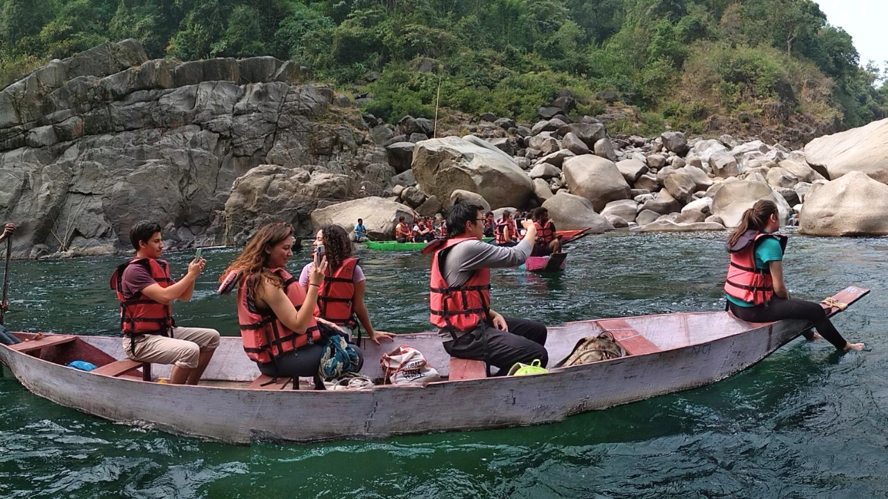

Overview
Explore how rainfall shapes Meghalaya’s landscape, communities and economy
This seven-day educational youth expedition combines hands-on learning with village stays, guided walks and outdoor activities across Meghalaya. The journey connects the region’s extraordinary rainfall with its forests, geology, living root bridges, farms and local economy.
Participants use maps, rainfall records and field observation to understand the monsoon; learn how Khasi communities conserve sacred forests and nurture living root bridges; and engage directly with village residents, farmers, craftspeople and young people.
Practical activities—including bamboo basket-making, a community tourism survey, village cleaning, cooking and river-based adventure—encourage teamwork, responsibility and thoughtful discussion about sustainability, livelihoods and the effects of tourism.
Expedition Details
Route character
Learning Themes
Explore Meghalaya through three connected subjects
The programme may be adjusted to suit the group’s age, learning objectives and local conditions.
Rainfall, water and geology
Use maps, a compass, viewpoints and historical rainfall records to investigate why Sohra and Mawsynram receive such intense rainfall and how patterns have changed over time. Visits to the Mawphlang Sacred Grove and Mawsmai Caves connect the monsoon with traditional conservation, water systems, forest ecology and Meghalaya’s distinctive geological history.
Living root bridges and intergenerational knowledge
Observe a triple-decker root bridge being nurtured and hike to Nongriat’s double-decker bridge. Conversations with village elders and younger residents explore how Khasi communities guide and maintain the roots of the Ficus elastica, creating infrastructure that takes years to become usable and is built for future generations.
Local economy, tourism and community responsibility
Learn how farming, homestays, renewable energy, bamboo craft, betel nut, bay leaf and broom grass support local livelihoods. A village tourism survey, community cleaning, basket-making and discussions with local children examine the benefits and pressures of tourism. River activities, shared cooking, traditional Khasi music and a discussion of the Jaintia Plateau’s small-scale collieries broaden the study of economy, culture and environmental responsibility.
Detailed itinerary
Ask for the full expedition plan and cost
The route is adapted to the group’s age, size, learning goals and local conditions. Contact us for accommodation details, activity requirements, inclusions and a complete programme.
Photo Gallery
Immersive learning in Meghalaya
Enquire
Plan a Meghalaya Youth Expedition
Share a few details and we will get back to you with the route, programme and cost options.